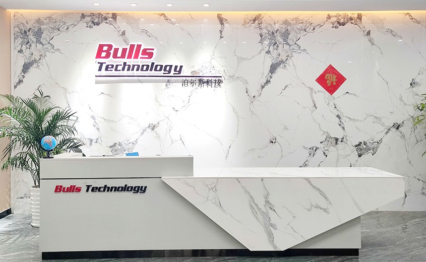

Precision Fiber Optic Equipment Engineering the Future
Bulls Precision specializes in the R&D and manufacturing of fiber optic polishing machines,
PM fiber alignment systems, and fiber laser cutting machines — delivering high-accuracy
solutions for the global fiber optic communication industry.
Who We Are
Deeply rooted in precision fiber optic equipment, driving industry advancement through innovation
Founded in 2011, Bulls Precision (Dongguan Bulls Technology Co., Ltd.) integrates R&D, design, manufacturing, and sales under one roof — specializing in fiber optic connector polishing equipment and precision fixtures.
Guided by our core values of "Precision, Innovation, Quality, and Service," we are committed to solving critical production challenges for the industry and providing world-class equipment and solutions for fiber optic communication enterprises worldwide. Our products are exported to over 50 countries across North America, Europe, Southeast Asia, and beyond — trusted by industry leaders around the globe.
R&D Excellence
Dedicated research team with continuous investment in technological innovation
In-House Manufacturing
Full-stack R&D, design, and precision machining under one roof in Dongguan
Global Reach
Products exported to 50+ countries with 24/7 technical support

Core Products
Full range of precision fiber optic equipment to meet diverse production needs

BULLS-5000A
MTP/MPO Fiber Polishing Machine
High-precision multi-fiber connector polishing solution supporting MTP/MPO and various interface types. Features a high degree of automation and consistently excellent polishing quality.
- Fully Automated Control
- Precision Pressure Regulation
- Multi-Station Processing

BULLS-3500
High-Performance Fiber Polishing Machine
Designed for endface polishing of all types of fiber connectors. Easy to operate, highly precise, and widely used in fiber optic communication manufacturing.
- Smart Program Control
- Ultra-Quiet Operation

BULLS-PM2000
PM Fiber Axis Alignment & Measurement System
High-precision automatic PM fiber axis angle alignment and measurement. Widely used in aerospace, defense, and telecommunications applications.
- Automatic Axis Alignment
- Sub-Degree Accuracy

BULLS-LS1000
Fiber Laser Cutting Machine
High-precision fiber laser cutting with smooth, flat cut surfaces. Suitable for precision cutting of multiple fiber types.
- Laser Precision Cutting
- Automatic Feeding System

Polishing Fixtures
Precision Fiber Polishing Fixtures
Full range of polishing fixtures compatible with SC, LC, FC, ST, MTP and other connector types. CNC machined for long service life.
- Multi-Type Compatible
- Precision CNC Machined
Our Technological Edge
Continuous innovation, building competitive advantages through core technology
Proprietary Motion Control
Self-developed motion control algorithms and chipsets achieving nanometer-level polishing trajectory precision, ensuring consistency and stability in every process cycle.
Intelligent Automation
Equipped with AI-powered inspection and adaptive adjustment systems that monitor processing status in real time, automatically optimizing parameters and reducing manual intervention.
Nanometer-Level Accuracy
Utilizing high-precision sensors and closed-loop feedback, our polished endface roughness reaches sub-nanometer levels — meeting the most stringent industry standards.
Industrial IoT Integration
Supports IoT-enabled remote monitoring and data acquisition, enabling visual equipment management and helping clients build smart factories.
Custom Solutions
From equipment customization to production line planning, we offer end-to-end services with flexible configurations to maximize your production efficiency.
Green Manufacturing
Low energy consumption design philosophy with optimized cooling and waste discharge systems, reducing resource waste and fulfilling our commitment to sustainable development.
Our Strength in Numbers
Proven by data, trusted through quality
Our Journey
Company Founded
Bulls Precision was officially established, embarking on our journey in precision fiber optic equipment R&D.
Technology Breakthrough
Our independently developed fiber polishing machines entered mass production, establishing the foundation of our current product line.
Global Expansion
Products entered North American and European markets, establishing partnerships with leading international fiber optic companies.
Smart Upgrade
Launched next-generation intelligent polishing equipment with AI-powered visual inspection, enabling fully automated production.
Industry Leadership
Product portfolio expanded to cover polishing machines, PM alignment, laser cleavers, and a full line of fixtures — now serving fiber optic manufacturers across multiple continents.
Ready to Elevate Your Fiber Optic Manufacturing?
Our expert team will provide tailor-made solutions to help you achieve higher efficiency and superior precision in production.
Get in Touch
We look forward to every collaboration — let's build something great together
Address
Room 901, Building 19, No. 7 Keji Road,
Houjie Town, Dongguan City,
Guangdong Province, China
Phone
+86 769-8588-1961
+86 189-2342-6506
sales@bull-eq.com
+86 189-2342-6506